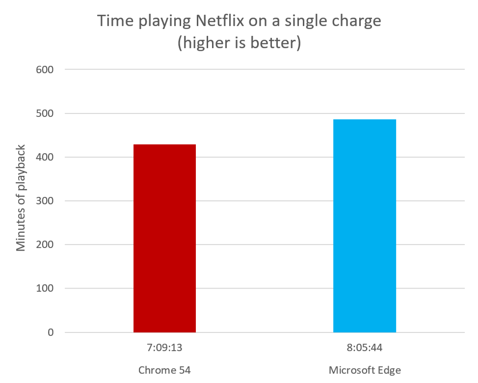

The Microsoft Windows team measured the time it took two identical Surface Book laptops to run fully through their batteries while streaming video from Netflix.
The test was done on two Surface Books running 1607 (build 14393.447) and connected to the Internet through Wifi.
Microsoft Edge lasted 13% longer than Chrome 54 in this test.
| Time | Minutes | |
| Chrome 53 | 7:09:13 | 729 |
| Microsoft Edge | 8:05:44 | 486 |
The test was performed on 2 separate Surface Book laptops running Windows 10 Anniversary Update (14393.447 release). These computers were configured to the following settings, to increase consistency between measures and reduce tasks that may start during the measurement and interfere with the results, while still representing a realistic user setup:
| OS | Windows 10 Pro 14393.447 |
| Microsoft Edge | Microsoft Edge 38.14393.447.0 |
| Chrome | Google Chrome 54.0.2840.099 m (64-bit) |
| Processor | i5-6300U @ 2.4GHz 2.5GHz |
| Memory | 8G |
| Graphics | Intel HD Graphics 520 |
While plugged in, each respective browser was navigated to Netflix.com and logged into the same account. The TV show "Gilmore Girls: Season 1" was queued and paused immediately on each browser. The Post-Play autoplay feature on Netflix was enabled to continuously play the next episode when one finishes. Each computer was verified to have brightness set to 100% (with ambient brightness disabled) and volume to 20%.